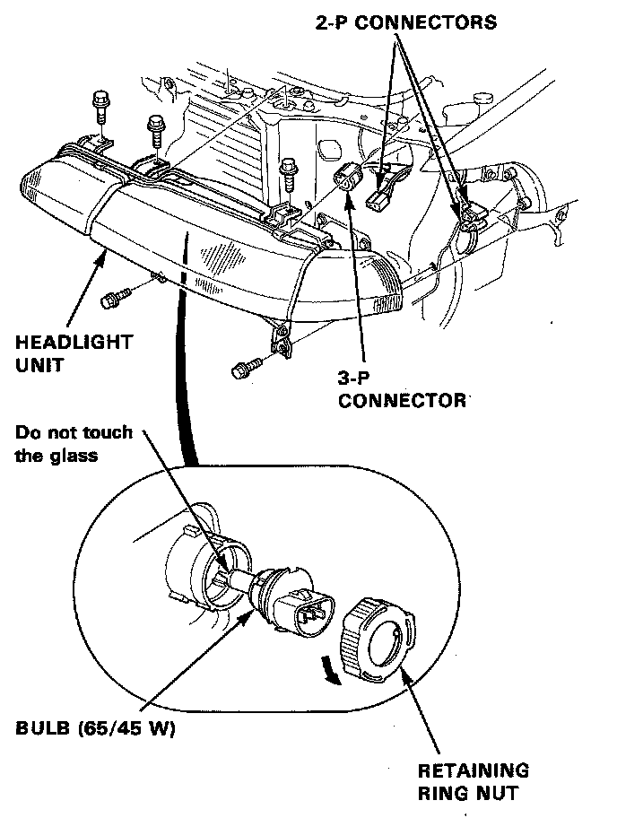

Headlamp: Service and Repair

CAUTION:
- Halogen headlights can become very hot in use; do not touch them or the attaching hardware immediately after they have been turned off.
- Do not try to replace or clean the headlights with the lights on.
1. Disconnect the 3-P connector and 2-P connectors from the each bulb. Before disconnecting right side connector, remove the air cleaner case.
2. Turn the retaining ring nut to OPEN position, then remove the bulb.
3. Remove the front bumper, air intake tube and 5 mount bolts, then remove the unit.
4. After installing the unit, adjust the headlights to local requirements.